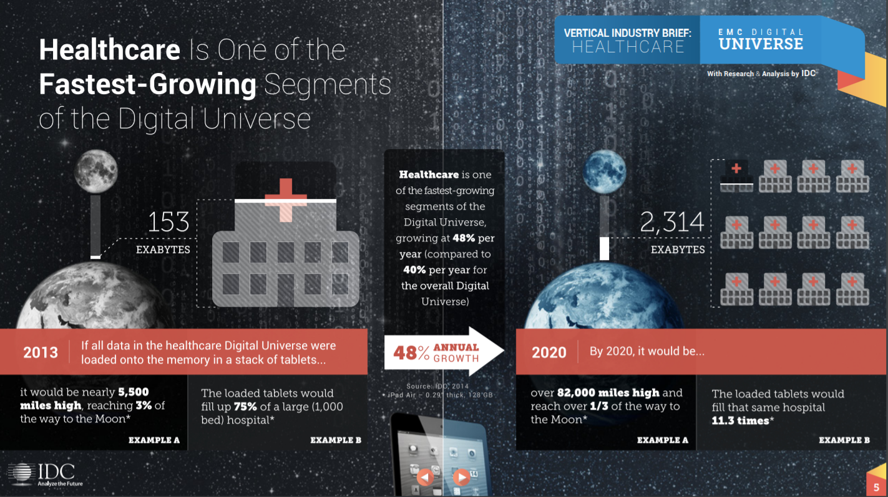
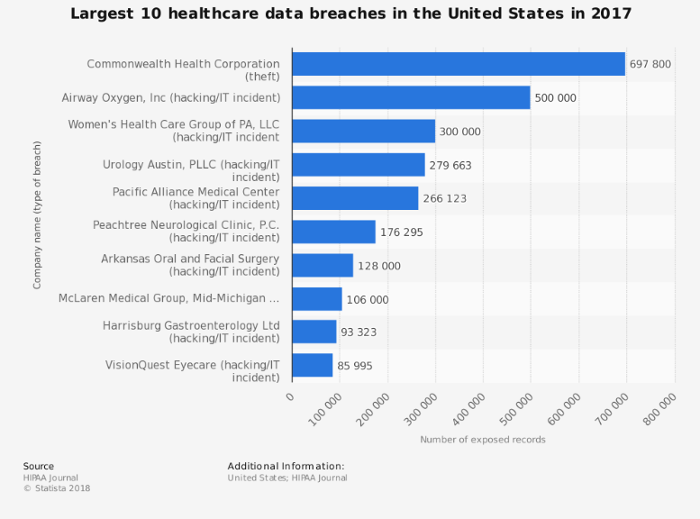

“Before we demand more of our data, we need to demand more of ourselves.” – Nate Silver
In his 2015 book, The Signal and the Noise: Why So Many Predictions Fail--but Some Don't, Nate Silver describes the era we currently live in today as one rich with data but scarce in tools that can effectively utilize that data. He writes that no matter how much information researchers, scientists, and doctors can gather, it is pointless if the data cannot be used in meaningful ways. With healthcare being rich with patient and scientific data, AI plays a pivotal role. For large healthcare providers and others in their industry, information can be both an asset and a liability, While it may be used to help drive insights, there are increasing concerns regarding the use of AI. Concerns span from the confidentiality of your personal information when a computer may use it to improve its diagnostic ability, to the introduction of a third agent in the physician-patient relationship which can change the expectations of care and levels of trust.
Since AI is so promising in improving healthcare, it is easy to fully commit to the idea and jump in too quickly. The ethical concerns span far and wide and must be carefully considered. While there are numerous sources of ethical risk, we will be highlighting one that is common among all applications of AI: the protection of data.
As seen above, taken from a report by done by the International Data Corporation, there is a massive amount of healthcare data. The same report also says that healthcare data is growing 48% each year, outpacing other data rich industries. Protecting this vast amount of data is an obligation of those who hold it. That, however, is not the easiest thing to do.

The same report by the International Data Corporation says that almost all of patient data requires protection (93% of it to be specific). Examples of document that need to be kept safe are medical records such as blood tests and insurance claims histories for care received. They also estimate that 43% of healthcare data is currently not secure enough. Information about your heart health, vaccination history, or even whether or not you had braces can be very valuable to criminals. Certain medical records even have the information necessary to steal an identity. Consequences of this are seen all the time in the form of data breaches. Below shows the biggest healthcare data breaches in the US in last year alone.
Furthermore, according to the Institute of Electrical and Electronics Engineers, from 2010 to 2012, 94% of hospitals had at least one data security breach.
Adverse effects of data breaches are not only imposed on the patients. The data holders themselves are at risk. Hackers can hold data ransom, patients may lose trust in medical institutions, and of course the PR nightmare that must occur when these stories break.
If you are interested in hearing more about the black market for healthcare data, check out this NPR podcast.